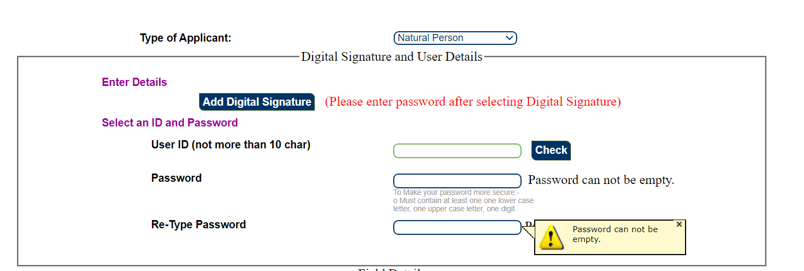
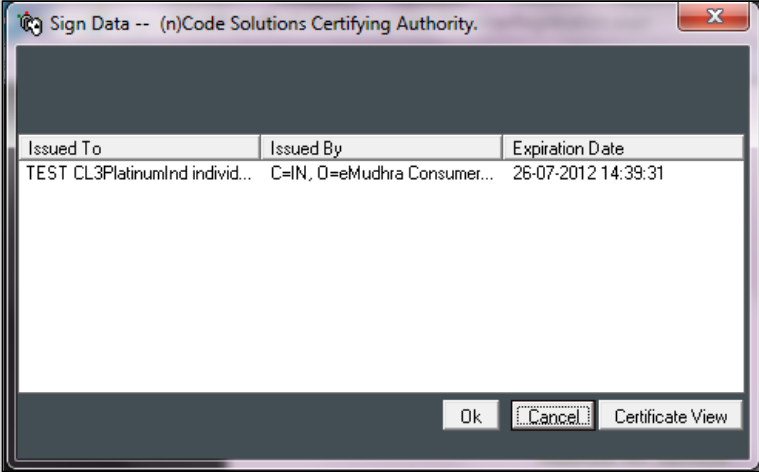
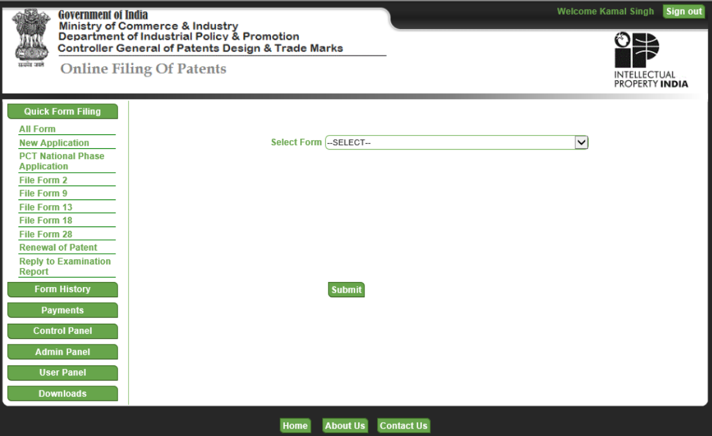
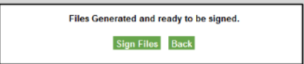
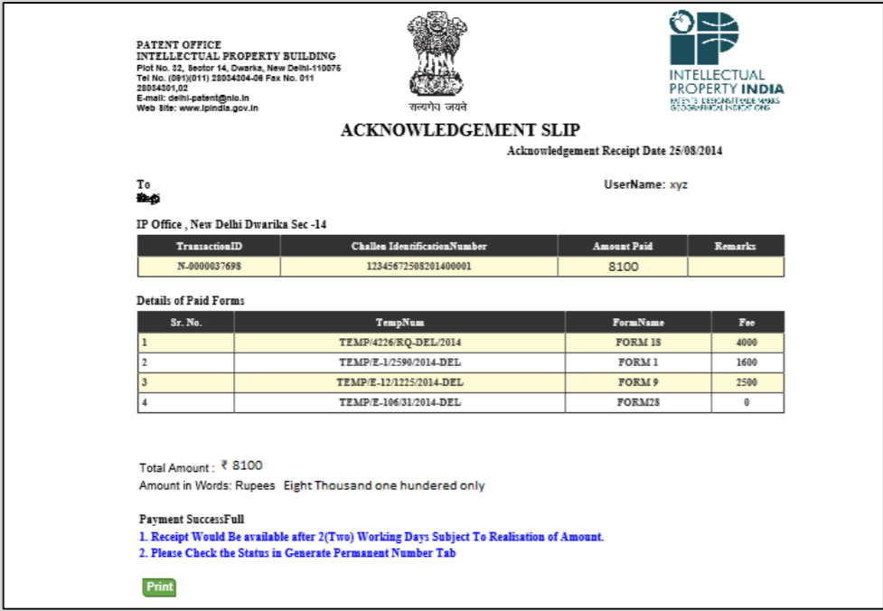

Verify if the patent meets all the criteria as per Indian Patent Act, which is
Click here to learn more
For Type of Applicant select "Natural Person". You will be required to add Digital Signature before proceeding
If Digital Signature has been installed properly then the following the screen should pop up. Please select the appropriate certificate.
On successful registrations and login you will be redirected to the following page
Following forms are required:
After Completion of the form user has to save the draft. Saving the draft would create a new entry in the drafted forms that can be accessed later on.
Upload:After the draft is saved, user is required to upload the relevant documents by selecting from the drop down list.Once the document is successfully uploaded, uploaded documents would appear in the tabular form.
Note that each form must be digitally signed, while uploading
After the forms are digitally signed, it is ready for making the payment though the available Payment Gateways.User just needs to check the ready forms that require payment, select the payment mode and bank and proceed.
On successful payment the following screen will be visible:
If application has Provisional Specification: Need to file Complete Specification within 12 months. If not, application will be abandoned
If application has Complete Specification: Early or post 18 months to publish
Should be done within 48 months from date of priority
Examination of patent is done and FER (First Examination Report) is issued
Re-examination of amended documents
Controller will offer hearing to Applicant
Application should be put in order 12 months from issue of FER
If objections met within 12 months - patent is granted and published, if not - patent will be abandoned
After the patent has been granted, it has to be renewed every year by paying the renewal fee.
There is no separate form required for patent renewal. A patentee can directly pay the renewal fee by making a request to the controller of patent.